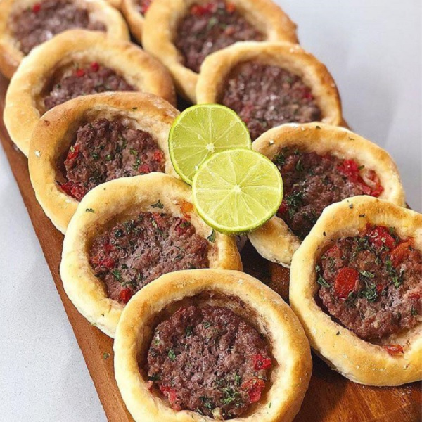
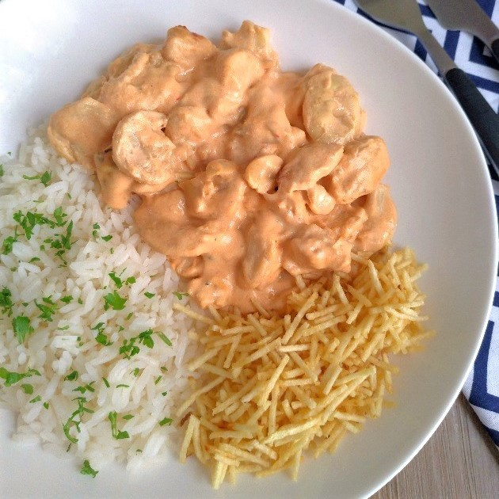
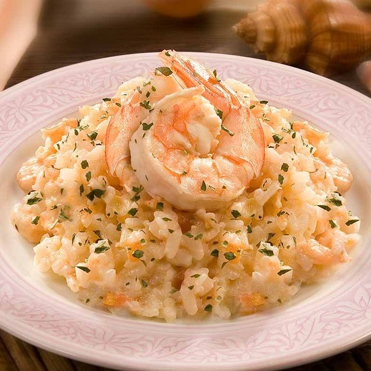

Esfirra de carne
Que tal aprender a preparar aquelas deliciosas esfirras abertas?
Clique na imagem e assista o vídeo da receita.

Batata Recheada
Experimente esta receita de Batata Recheada, bem fácil e irresistível..
Clique na imagem e assista o vídeo da receita.

Strogonoff de Frango
Como fazer Strogonoff de Frango simples e fácil: essa receita tradicional leva poucos ingredientes, fica pronta rápido e rende bastante.
Clique na imagem e assista o vídeo da receita.

Risoto de Camarão
Nesta receita você irá aprender o risoto perfeito, cremoso. Sirva aos amigos e prepare-se para os elogios.
Clique na imagem e assista o vídeo da receita.